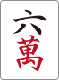

1. 6巡目に、将来のリーチへ備えられているか確認する
222の法則は「2シャンテン・愚形2つ残り・立直して2ハン」。全て該当なら和了は厳しいと見て、将来の放銃回避を意識する。0面子も該当、副露手は例外。この手は共通現物の南を残し、 を先に処理する。機械的な即ベタオリとは分ける。
を先に処理する。機械的な即ベタオリとは分ける。
10/8 てんてん先生
222の法則は「2シャンテン・愚形2つ残り・立直して2ハン」。全て該当なら和了は厳しいと見て、将来の放銃回避を意識する。0面子も該当、副露手は例外。この手は共通現物の南を残し、を先に処理する。機械的な即ベタオリとは分ける。

講師の「00物件」は0面子・0両面の重い手。通常の役牌と端牌の比較だけでは、安い遠い手にまとまりやすい。役牌の重なりや123三色・チャンタの種を残し、鳴ける手役も見て打点を作る。このゴミ手での例外を、通常の三色6種類の基準に混ぜない。
17:40の場面をYouTubeで見る
赤 が残るため、ドラ
が残るため、ドラ を切ってもリーのみにならない。赤がなければ安い愚形立直になりやすく、ドラを残す価値が上がる。ターツ比較では河も見る。が2枚切れなら
を切ってもリーのみにならない。赤がなければ安い愚形立直になりやすく、ドラを残す価値が上がる。ターツ比較では河も見る。が2枚切れなら
 のカンチャンを先に外す判断が有力で、基本の両面・カンチャン・ペンチャン序列だけで固定しない。
のカンチャンを先に外す判断が有力で、基本の両面・カンチャン・ペンチャン序列だけで固定しない。

セオリーの条件は「2面子＋1両面＋ヘッド無」または「1面子＋3両面＋ヘッド無」。平和効率で打つので、基本のオタ風・1.9＜役牌という序列が逆転する。雀頭ができた後まで、ヘッドレス時の優先順位を固定しない。
25:08の場面をYouTubeで見る
ここは 処理。孤立は超強孤立牌3〜7ではなく、薄い一通の種を理由に
処理。孤立は超強孤立牌3〜7ではなく、薄い一通の種を理由に
 を壊さない。基本序列は「強孤立牌3〜7≦ペンチャン＜超強孤立牌3〜7」。超強は5を含む4連形・中膨れ・打点や手役の種という条件付き。
を壊さない。基本序列は「強孤立牌3〜7≦ペンチャン＜超強孤立牌3〜7」。超強は5を含む4連形・中膨れ・打点や手役の種という条件付き。

相手が今切った牌には、同巡フリテンの安全がある。次に相手のツモ番が進めば、その保証は持ち越せない。オリでは今合わせられる牌を使い、後でも使える現物の対子を残す。1人に通る牌だけでなく、別の相手への二の矢も考える。
40:40の場面をYouTubeで見る
親・待ちが絞れている／聴牌率が高い、という複数条件で要対応。自手価値が低いならさらに警戒する。晒し手が 

門前3対子では、両面対子を両面へ固定する。ロスは切った牌の重なりだけなので、6ブロックでも両面固定が有力。4対子になれば七対子も再評価。対子を落とす際は、次巡にリーチが来ても2枚目を切れるかまで比較する。
73:16の場面をYouTubeで見る
なら完全形で瞬間の受け入れは最大。ただし聴牌の多くがカン 待ちになる。
待ちになる。 はドラの受けを、
はドラの受けを、 は強い
は強い 待ちと一盃口のダマを意識した余剰牌型。講師はを評価しつつ、最後はも有力と修正し、も許容した。微差を唯一解にしない。
待ちと一盃口のダマを意識した余剰牌型。講師はを評価しつつ、最後はも有力と修正し、も許容した。微差を唯一解にしない。

首位の親39000点、自分31600点で7400点差。1300・2600ツモなら自分＋5200、首位−2600で差が7800縮み逆転できる。役牌のみの鳴きへ寄せるより、立直・ツモ・平和などの条件を残す。を壊して孤立 を残す判断も、この着順条件から見直す。
を残す判断も、この着順条件から見直す。